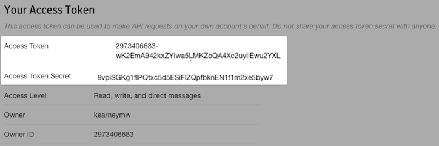

Obtaining and using access tokens
rtweet: Collecting Twitter Data
auth.Rmdrtweet
This vignette covers how to obtain and use Twitter API access tokens for use in the rtweet package.
Creating a Twitter App
To create a Twitter app, navigate to apps.twitter.com and create a new app by providing a
Name,Description, andWebsiteof your choosing (example screenshot provided below).Important In the
Callback URLfield, make sure to enter the following:http://127.0.0.1:1410Check yes if you agree and then click “Create your Twitter application”.

Authorization methods
Users can create their personal access token in two different ways. Each method is outlined below.
1. Browser-based authentication
- Authentication via web browser requires the
httpuvpackage to be installed.
## install httpuv if not already
if (!requireNamespace("httpuv", quietly = TRUE)) {
install.packages("httpuv")
}- Click the tab labeled
Keys and Access Tokensto retrieve your keys.

- In the
Keys and Access Tokenstab, locate the valuesConsumer Key(aka “API Key”) andConsumer Secret(aka “API Secret”).

- Copy and paste the two keys (along with the name of your app) into an R script file and pass them along to
create_token().
## autheticate via web browser
token <- create_token(
app = "rtweet_token",
consumer_key = "XYznzPFOFZR2a39FwWKN1Jp41",
consumer_secret = "CtkGEWmSevZqJuKl6HHrBxbCybxI1xGLqrD5ynPd9jG0SoHZbD")A browser window should pop up. Click to approve (must be signed into twitter.com) and return to R.
The
create_token()function should automatically save your token as an environment variable for you. To make sure it worked, compare the created token object to the object returned byget_token()
2. Access token/secret method
- Click the tab labeled
Keys and Access Tokensto retrieve your keys.
- In the
Keys and Access Tokenstab, locate and copy/paste valuesConsumer Key(aka “API Key”) andConsumer Secret(aka “API Secret”) into an R script.
- In the
Keys and Access Tokenstab, scroll down toToken Actionsand clickCreate my access token.

- That should generate two access keys
Access TokenandAccess Token Secret

- Locate and copy/paste the
Consumer Key(aka “API Key”),Consumer Secret(aka “API Secret”),Access Token, andAccess Token Secretvalues and pass them along tocreate_token(), storing the output as atokenobject.
## authenticate via access token
token <- create_token(
app = "my_twitter_research_app",
consumer_key = "XYznzPFOFZR2a39FwWKN1Jp41",
consumer_secret = "CtkGEWmSevZqJuKl6HHrBxbCybxI1xGLqrD5ynPd9jG0SoHZbD",
access_token = "9551451262-wK2EmA942kxZYIwa5LMKZoQA4Xc2uyIiEwu2YXL",
access_secret = "9vpiSGKg1fIPQtxc5d5ESiFlZQpfbknEN1f1m2xe5byw7")- The
create_token()function should automatically save your token as an environment variable for you. To make sure it worked, compare the created token object to the object returned byget_token()
That’s it!